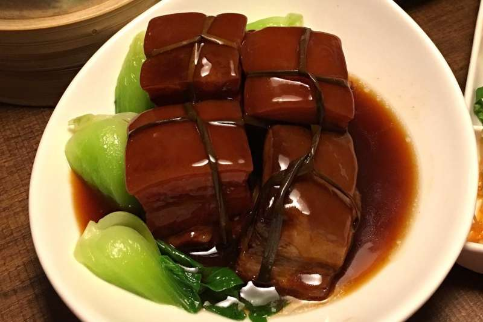

蘇軾祖籍四川眉山，因工作關係，天南海北調動， 嘗遍了各地的料理，寫過許多反映佳餚名饌的詩文， 如〈菜羹〉、〈食豬肉詩〉、〈豆粥〉等，還有著名的〈老饕賦〉。 他在詩作中以老饕自居，生動反映了他對於烹調的濃厚興趣和品嘗佳餚美味的豐富經驗， 堪稱古代文學家中的大吃家。 加入料酒、薑、蔥、醬、紅糖，用文火燜得香嫩爛酥，再每戶一塊肉分送回去。 禽味加芹味，這道菜可說是鮮美至極。

第二頁 第三頁 第四頁 心得